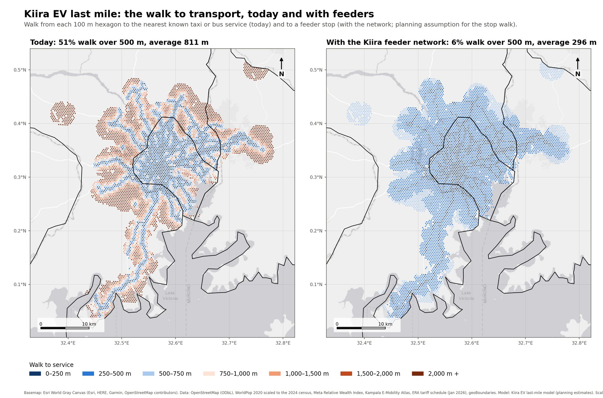
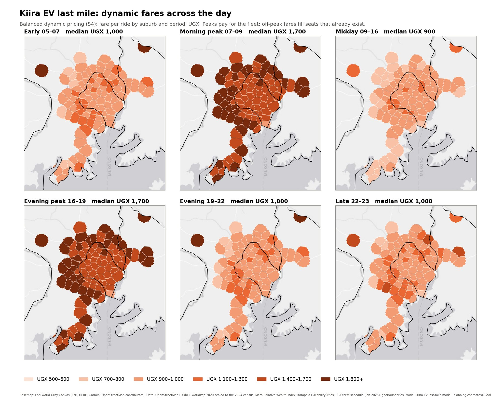
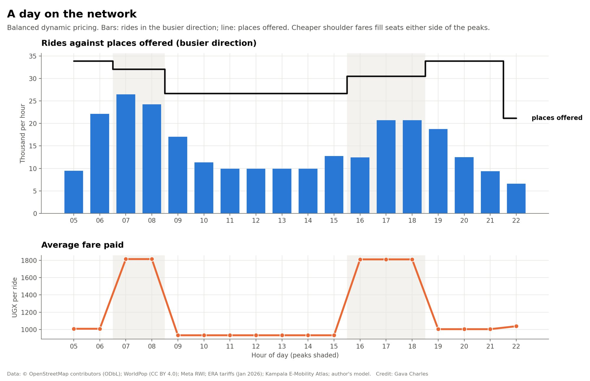
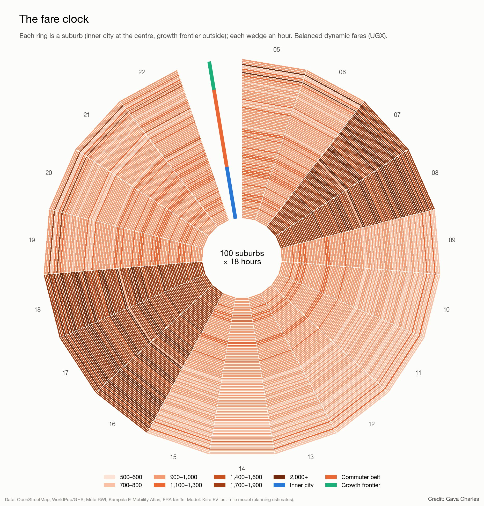
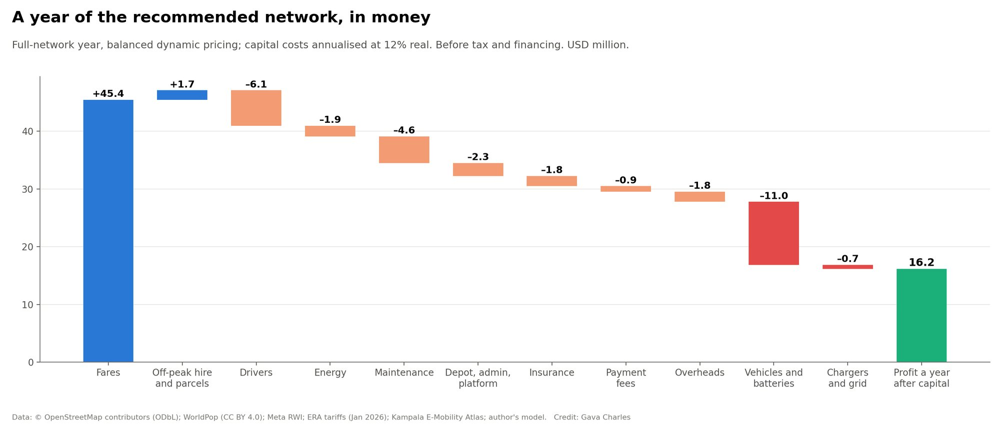
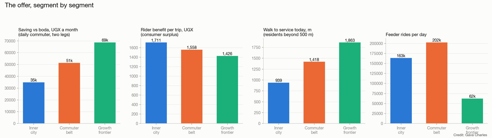
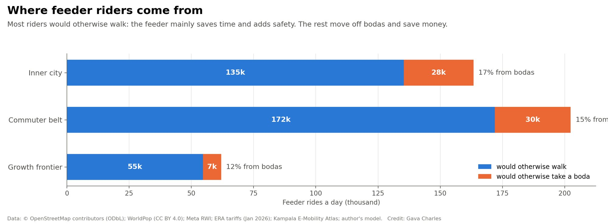
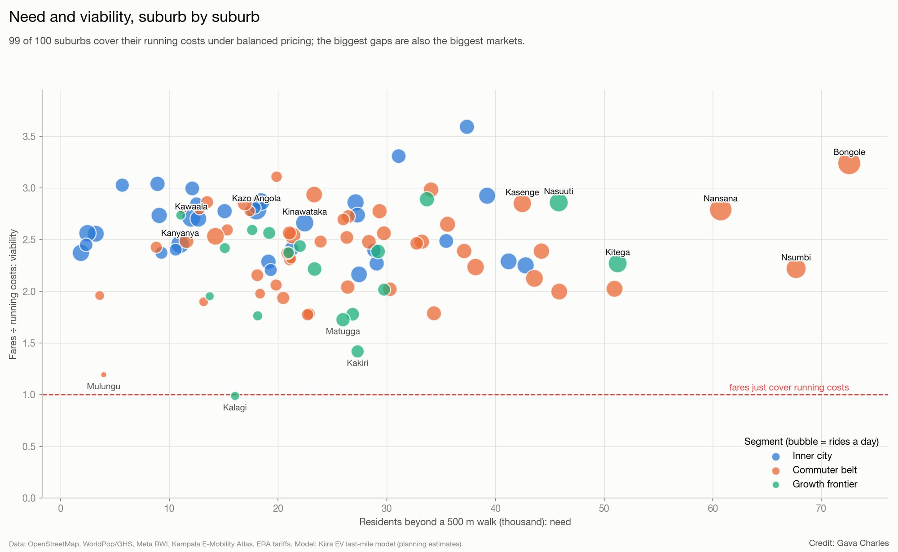
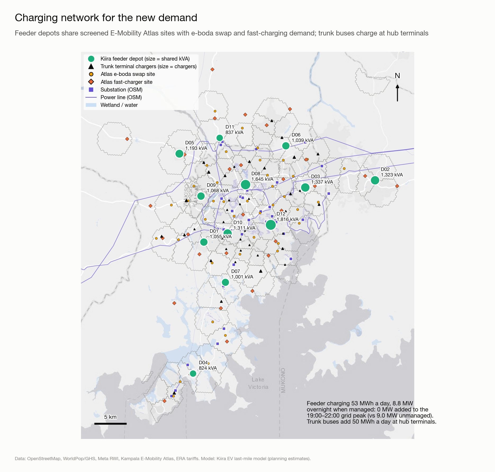
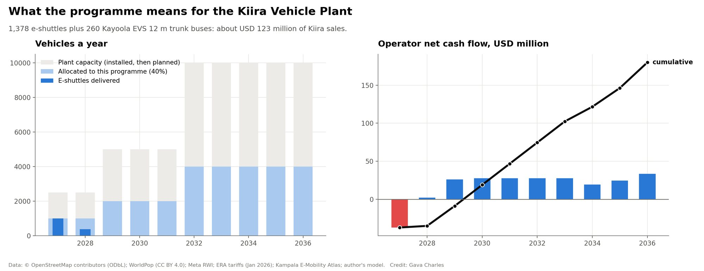

Kiira-built electric feeders could close the last mile for 2.4 million people in Greater Kampala
The Kiira Vehicle Plant in Jinja opened in September 2025 with capacity for 2,500 vehicles a year. This model asks what its vehicles could do for 100 suburbs where 2.4 million residents live more than a 500 m walk from any taxi or bus service. Feeder e-shuttles run each suburb to its nearest hub, Kayoola EVS 12 m buses carry onward riders to the centre, and fares change by suburb and hour of day.
Recommended scenario (S4, balanced dynamic pricing). Planning estimates from open data and stated assumptions; replace them with survey, operator and Kiira Motors data before any decision. USD at UGX 3,650.
The network, hour by hour
Watch a one-minute tour of this page. Press play to watch a day of dynamic pricing: suburbs recolour as fares change and the shuttles move along their feeder paths. Switch to satellite in the layer control. Click a suburb, depot or hub for details. The map shows the scenario currently set in the lab below.
Moving buses: the morning peak at street level
Every modelled e-shuttle (green) and Kayoola EVS 12 m trunk bus (orange) in central and north-west Kampala between 07:00 and 08:30, spaced at the headways the model sets, on the real road paths.

Scenario lab
Every control re-runs the full model in your browser: demand choice by hour, fleet sizing, fare optimisation, costs, roll-out under plant output and charging load. Start from a preset, then change anything.
Dynamic pricing: why the peaks should pay more
Peak riders decide how many vehicles the operator must buy and staff; off-peak riders fill seats that already exist. So the model sets the peak fare together with the fleet size, then sets each off-peak fare to fill those seats. Fares never exceed 85% of the boda fare for the same trip. The balanced rule maximises operator profit plus half of what riders gain. The profit-max rule ignores riders' gain, and the inclusive rule carries the most riders while fares still cover running costs.
Each point is a full model run. At the same average fare, peak/off-peak pricing earns more because the fleet is sized for a flatter peak.




Value proposition
The same network offers something different to each group. Numbers update with the scenario lab.
For each stakeholder



Expanding the charging network for the new demand
Twelve feeder depots sit on sites the Kampala E-Mobility Atlas already screened for flood risk, wetlands, slope and grid distance. Most are fuel forecourts proposed for e-boda battery swapping. Sharing them means one medium-voltage connection serves e-shuttles overnight and e-boda swaps by day. Trunk buses charge at hub terminals.
Depots (recommended scenario)

What it means for the Kiira Vehicle Plant

How sure is the return?
GIS and satellite maps
Method, assumptions and sources
How the model works
- Suburbs. 100 named OpenStreetMap places across Kampala, Wakiso and Mukono, at least 1.7 km apart, excluding the CBD. Catchments come from 100 m population hexagons (WorldPop/GHS), wealth from Meta's relative wealth index. Walk distances to the nearest known taxi or bus service come from the Kampala last-mile study.
- Feeders. Shortest road path from each suburb centre to its nearest hub (fixed-interval bus model hubs), plus a loop scaled to the catchment.
- Demand. For every hour 05:00–23:00, each home-end trip leg chooses between walking, a boda and the feeder (multinomial logit on fare, walking, waiting and riding time). Value of time and price sensitivity vary with suburb wealth, time pressure is higher in the peaks, and walking after dark is penalised.
- Fleet. Sized so the busiest hour runs at 85% of places offered. Seats turn over 1.5 times per trip as riders board and alight along the route. The 8 m Kayoola is only allowed where main roads make up enough of the network.
- Fares. Flat, time-of-day, profit-max, balanced or inclusive, as described above.
- Costs. Vehicles over 10 years with a mid-life battery, depot and hub chargers, grid connections, drivers (2.2 per vehicle), maintenance, insurance, depot and admin costs, and energy on ERA's Jan 2026 commercial time-of-use tariff.
- Roll-out. Suburbs in priority order (need, density, distance, income), delivered as 40% of plant output allows.
- Trunk. 35% of feeder riders continue towards the centre; hubs with at least 1,500 transfers a day and more than 2.5 km out get Kayoola EVS 12 m lines.
- Charging. Depots are found by clustering suburbs by energy use and choosing screened Atlas sites near substations. Their load is combined with the Atlas e-boda swap load (25% electrification) and half its 2,000-car fast-charging load.
- Uncertainty. 400 Monte Carlo draws over demand, prices, value of time, power, pay, route alignment, trust, seat turnover and speed.
Key assumptions
Sources
OpenStreetMap contributors (ODbL); WorldPop and GHS population; Meta Relative Wealth Index; Kampala last-mile study and fixed-interval bus model (this project); Kampala E-Mobility Atlas (swap and charger sites, substations, flood and wetland screen); ERA tariff schedule Jan 2026 (commercial TOU UGX 650.8 / 546.4 / 414 per kWh); Kiira Motors and press reports on the Kiira Vehicle Plant (commissioned 26 Sept 2025, 2,500 vehicles/yr installed, expansion to 5,000 and 10,000) and the Kayoola EVS (12 m: 90 passengers; 8 m: 56). Imagery © Esri, Maxar, Earthstar Geographics.
Downloads
Workbook (scenarios, suburbs, fares, depots, Monte Carlo)
GIS layers (GeoPackage) and tables
The model (JavaScript, also runs in Node)
Videos: day of pricing · moving buses · moving buses (vertical) · day of pricing (vertical) · roll-out · charging · fly-through · how to use this page (1 min) · 3D skyline · scenarios · Monte Carlo